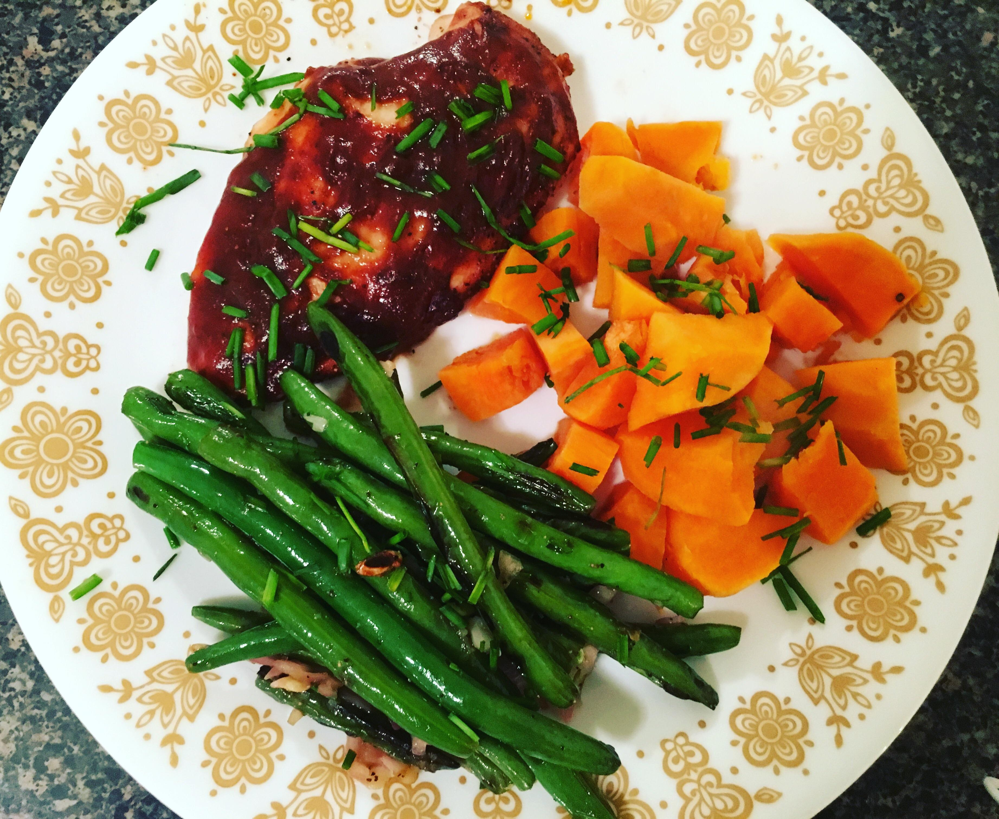

- Step One: Season and roast the sweet potatoes at 400 F for 10 minutes
- Step Two: Season the chicken and roast it with the sweet potatoes for 15 minutes (or until chicken is cooked through to 165 F)
- Step Three: Combine greek yogurt, mayonnaise, chipotle sauce, lemon juice, agave, and a pinch of salt in a bowl and mix until blended.
- Step Four: Build the bowl. Divide the rice, green beans, sweet potatoes, and chicken between two warm bowls. Top with avocado, feta cheese, chopped green onions, and drizzle the sauce mixture over the tops
- Step Five: Enjoy!